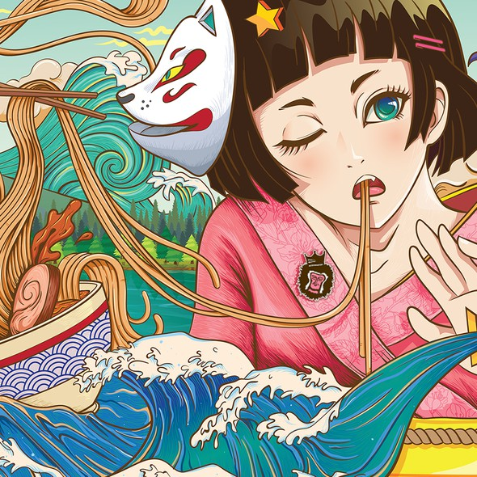

Posted on June 23, 2001 • Updated on November 23, 2025
90's Anime
The 1990s were also defined by ambitious directors and auteurs who pushed the medium into artistic territory rarely seen before. Creators like Hideaki Anno, Shinichirō Watanabe, Satoshi Kon, and Mamoru Oshii experimented with psychological tension, nonlinear narratives, and philosophical themes. Movies such as Ghost in the Shell and Perfect Blue blurred the line between animation and cinema, proving anime could tackle adult topics with depth and creativity. This decade set a foundation for storytelling complexity that future generations would build on.
Another important aspect of 90s anime was its role in global exposure. Western audiences were introduced to anime through VHS tapes, cable TV blocks (like Toonami), and early DVD releases. Shows were often edited or localized, but they still opened the door to international interest, inspiring an entire wave of fans. This slow but growing exposure contributed to a sense of mystique around anime—a hidden, underground artform that felt different from anything in Western animation.
Finally, 90s anime had a strong emphasis on atmosphere. Background painters created richly detailed cityscapes, watercolor environments, and moody sunsets using traditional techniques. Soundtracks blended jazz, rock, orchestral music, and experimental electronic sounds, giving series an emotional weight that fans still remember. This unique blend of hand-drawn visuals and soulful music is part of why so many 90s shows remain beloved today.
Mid 2000's Anime

The mid-2000s also marked the rise of “anime culture” as a lifestyle. Conventions grew rapidly, AMVs (anime music videos) became popular online, and anime-inspired forums and fanfiction communities exploded. Cosplay flourished, memes formed, and fans interacted in ways that gave anime a much more visible presence. This cultural boom created a global community that supported studios, influenced trends, and helped older series gain new life through online sharing. On the production side, digital tools allowed studios to experiment with compositing, motion effects, and color grading that weren’t possible in the analog era. The look of anime became brighter, cleaner, and more polished. Shows could include dynamic camera pans, smooth transitions, and special effects like particle systems or glowing energy auras. The technology wasn’t perfect yet—some early CGI looked stiff—but it set the stage for the high-quality animation that would come later. Narratively, the mid-2000s leaned heavily into emotionally intense arcs and character journeys. Shounen series used long-running story structures, while dramas and romance anime explored themes of identity, relationships, and destiny. The era also saw the rise of iconic openings and endings—catchy songs, stylized visuals, and sequences that fans memorized. This era’s soundtracks and OPs remain some of the most nostalgic in anime history.
Todays Anime in 2025
In 2025, anime continues shifting toward more sustainable production methods. With the industry’s workload challenges gaining international attention, studios now rely on AI-assisted tools to reduce burnout without replacing human animators. AI helps with repetitive tasks—cleanups, in-between frames, or background variations—while artists still handle the expressive, creative work. This hybrid workflow lets studios create high-quality animation faster and more efficiently.
Narratively, 2025 anime explores a wide range of themes, from cozy slice-of-life healing stories to bold psychological and sci-fi narratives. Independent creators and small studios are gaining visibility thanks to accessible digital tools and global platforms. This results in fresh art styles, experimental concepts, and shorter but higher-quality series. Diversity in storytelling is greater than ever, appealing to niche communities as well as mainstream audiences.
The global influence of anime in 2025 is also at its peak. Collaborations between Japanese studios and international creators are more common, blending different cultural perspectives into new and unique projects. Anime-inspired animation from Korea, China, and Western studios influences the Japanese industry in return, creating a global feedback loop of creativity. Anime conventions, streaming platforms, and social media trends help the medium spread faster than ever before—making 2025 one of the most innovative and interconnected eras in anime history.